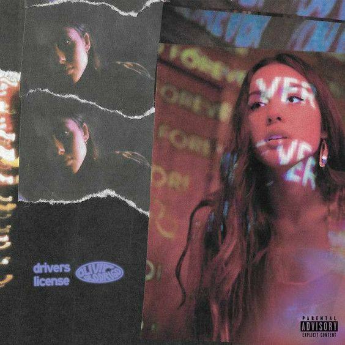
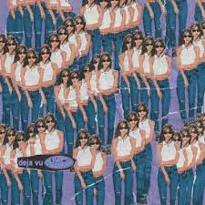

Cadastrar Dados A música, criada com Daniel Nigro, versão sobre uma relação abusiva, em que uma jovem se relaciona com um homem mais velho, sendo alvo do assédio da imprensa.
Cadastrar Dados  como o primeiro single do álbum sour. Com uma letra comovente detalhando uma decepção amorosa, "Drivers License" é uma power ballad atmosférica que foi descrita como uma canção bedroom pop e power pop.
Cadastrar Dados  Uma canção pop psicodélico e pop rock, "Deja Vu" vê Rodrigo questionar um ex-namorado, que está buscando um relacionamento diferente, sobre seu déjà vu quando ele se comporta com seu novo interesse amoroso da mesma maneira que fez com Rodrigo.